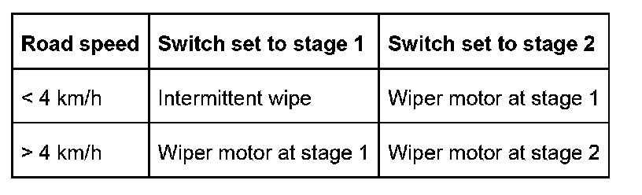
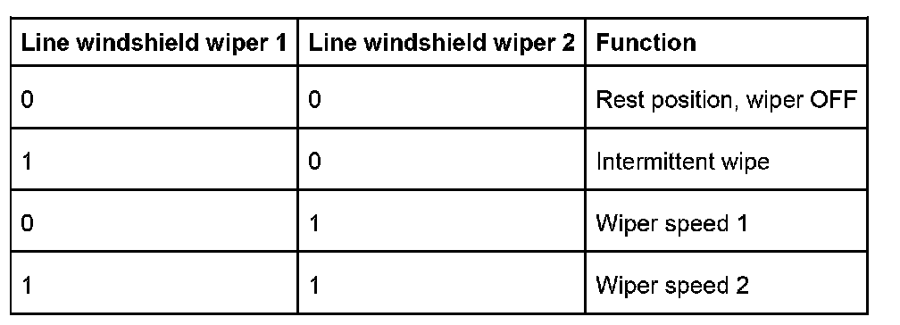
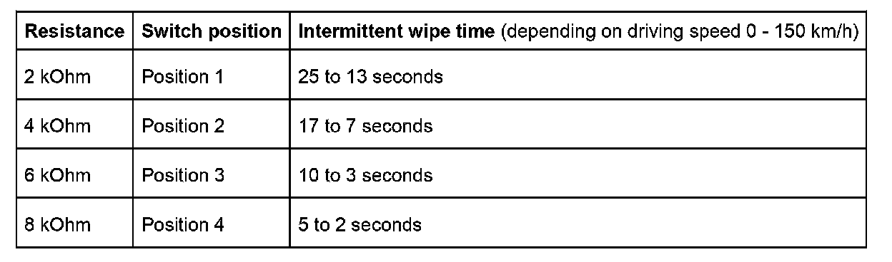

Windshield Wash
Windshield Wash
The wipe and wash functions are controlled by the general module 5.
Wipe functions
General
All wiper functions are active as from ignition lock position 1 (terminal R).
Wiper stages 1 and 2
Wiper stages "1" and "2" are controlled depending on the depending on the car's road speed.

When stage 2 is switched on, stage 1 cuts in at > 210 km/h to prevent the windshield wiper arm from lifting.
Intermittent mode
Intermittent wipe is activated in the first setting of the wiper switch. The intermittent wipe time can be set by means of a rotary switch on the wiper switch in four stages. The intermittent wipe time is also influenced by the driving speed.
Wiper switch
Switch positions
The wiper switch can be switched to the positions:
- Intermittent wipe = First setting
- Wiper stage 1 = Second setting
- Wiper stage 2 = Third setting
These positions are transferred via two lines to the general module 5.

Potentiometer for wiper interval
A potentiometer in the form of a rotary switch is built into the wiper switch to vary the setting of the intermittent wipe interval. The rotary switch can be set in four stages. Based on different resistance values. The general module 5 can detect the switch position and thus the preselected intermittent wipe time.

Wiper motor
Wiper motor and wiper relay
The wiper motor is designed for two speed stages. It is powered via an external twin relay.
The output WI 1 (signal name) at the general module switches on the wiper. The output WI 2 (signal name) switches the wiper motor to stage 2.
Reset contact
The reset contact in the wiper motor serves the purpose of detecting the wiper rest position. The contact is designed as a slip ring.
Interlock
The signals from the wiper reset contact are used to detect possible blocking of the windshield wiper motor.
The wiper motor is switched off immediately if there is no feedback from the reset contact for 16 seconds with the wiper motor switched on (e.g. to prevent dry running).
The wiper motor is switched on again after a waiting time of 3 minutes or after terminal R off.
However, the wiper motor is not switched on automatically even if the wiper switch remains on (risk of injury) but rather only after the wiper switch has been switched off and then on again.
Jamming protection is active in all wiper stages!
Wash functions
The wash functions are controlled by the general module 5.
A wash function is triggered by pressing the wipe-wash switch and switching on the windshield wipers in stage 1. The water pump is driven for as long as the wash function is implemented.
After the pump is switched off, the wiper pump is activated for 3 wipe cycles to wipe the windshield dry.